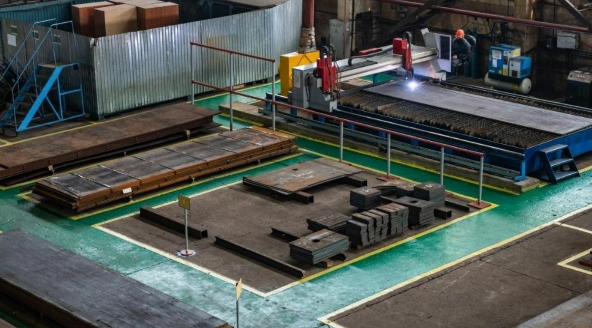
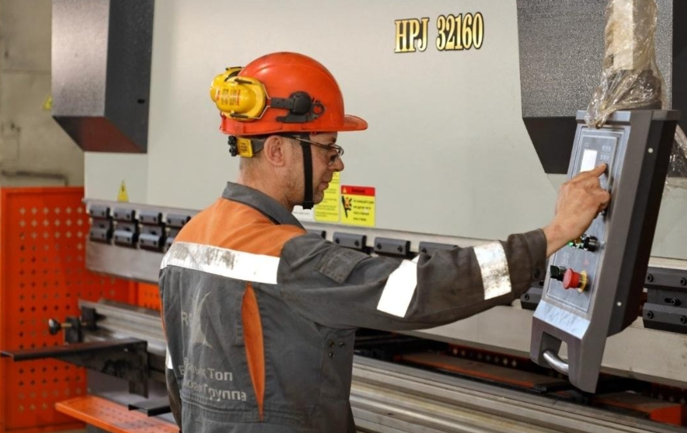

Біз қай салаға маманданамыз

Өнеркәсіптік жабдық өндірісі
Біз әртүрлі салаларға арналған жоғары дәлдіктегі өнеркәсіптік жабдықтарды жобалап, шығарамыз. Жабдықтың сенімділігі мен тиімділігін қамтамасыз ету үшін озық технологиялар мен автоматтандырылған басқару жүйелерін қолданамыз.
Металл өңдеу және машина жасау
Біздің зауыт металл өңдеуге, бөлшектерді өндіруге және күрделі құрылымдарды жинауға маманданған. Біз жоғары дәлдікті, сапаны және халықаралық стандарттарға сәйкестікті қамтамасыз етеміз.


Өндірістік процестерді автоматтандыру
Біз өндірісті айтарлықтай тиімдірек ету үшін автоматтандырылған басқару жүйелерін енгіземіз. Инновациялық технологияларды, IoT интеграциясын және сапаны бақылаудың озық әдістерін қолданамыз.